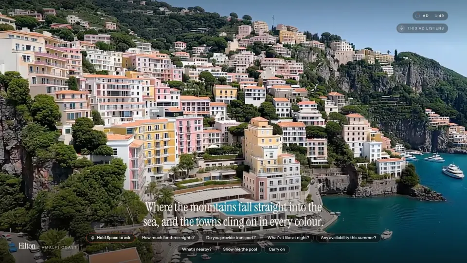
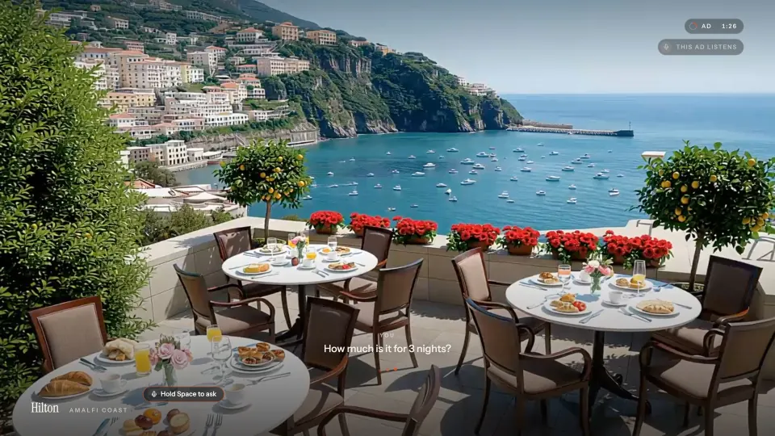
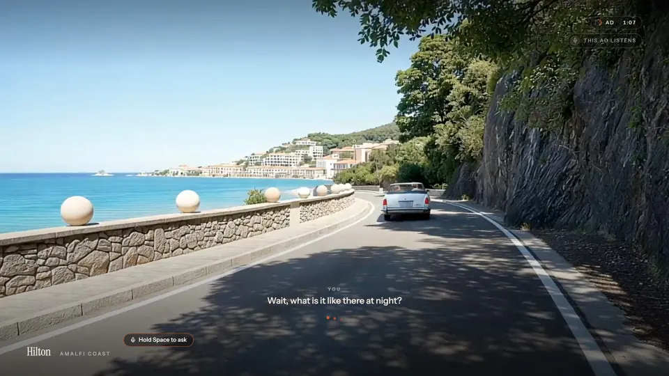
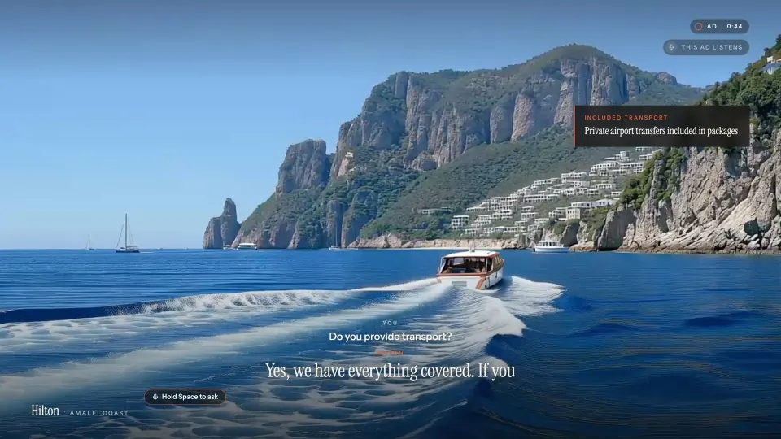
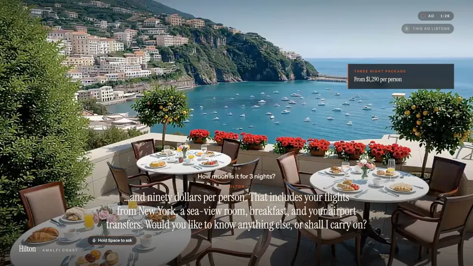

Ask a TV ad a question out loud. It answers you in its own voice, and the picture changes to show you.
The demo is a Netflix-style app we call NotFlix, playing a short film. The ad is for a made-up Hilton stay on the Amalfi Coast.
The show steps aside and the ad begins: a narrator over live video of the coast. A note in the corner says the ad is listening.

“How much is it for three nights?”
Hold the space bar and speak. The narrator stops, and the answer comes back in the same voice. The price goes up on a card.

“What’s it like there at night?”
The video moves to show what you asked about. Here, a sunny road turns into the harbour at dusk, a few seconds after the question.

When you’re done, say “carry on”, or just stay quiet. The ad finishes and the show picks up where it stopped.
Do you provide transport?

How much is it for three nights?

An ad catches you at the moment you’re curious, then gives you no way to ask. This one does, and it answers with the specifics you asked for.
Every question is a signal no click gives you: what people wanted to know, and what they wanted to see.
The ad’s video is started in the background while the show is still playing, so the break cuts straight to it.
Two programs run on the laptop. A small Python program handles all the sound. The streaming app handles all the pictures. They talk to each other over a local connection.
The built-in ones. The mic only listens while you hold the space bar.
Plays the narrator, sends your voice to the agent, plays its answers, and passes its requests to the app.
Hears the question, answers out loud, and uses tools to look things up and to change what’s on screen.
The streaming app: the show, the ad, the captions and the cards.
A video model that generates the ad live and follows written directions as it plays.
| Tool | Used for |
|---|---|
lookup_hotel_info | Rooms, beach, spa, transport, things to do nearby |
quote_price | The price of any stay, so numbers never drift |
check_availability | Which months still have rooms |
show_scene | A new shot for the video |
show_card | A fact on screen |
resume_ad | Back to the narrator |
A laptop has no echo cancelling. With the mic always open, it hears the ad through the speakers and the ad starts answering itself, and in a busy room it answers whoever is talking nearby. Push to talk solves both. With a mic array that cancels its own playback, like the reSpeaker we tried first, the mic can stay open.
HappyOyster, on Reactor, generates video live and keeps going for a few minutes. You can send it a line of text at any point, and the next few seconds of video follow it. Getting it to follow reliably took two tries.
The first world was described loosely, with the calmest settings. We told it “night falls”. It accepted the instruction and kept strolling through a sunny garden.
We rebuilt the world around named places, wrote day and night into it, and made every direction short and specific. Now “night falls” works.
| What we changed | Why it helped |
|---|---|
| Named the places in the world: the lobby, the pool terrace, the rooftop restaurant, the garden, the harbour, the coast road. | A direction can only move the video toward something the world already has. |
| Wrote the day into it: morning, golden hour, a lantern-lit night. | “Night falls” becomes a move the world expects. |
| Chose the livelier settings, “Dramatic” and “Fast”. | The calm settings hold the camera still, and hold off changes too. |
| Started every direction with “From 0 to 8 seconds,” and kept it to one action in one place. | A time window makes the change land within a few seconds instead of drifting. |
| Picked a fallback shot whenever the agent didn’t ask for one. | So every answer changes the picture. |
Photoreal travel commercial, shot on a gimbal and a drone, 35mm film look. You are a traveller arriving at Hilton Amalfi Coast, a cliffside resort above the pastel town of Positano. Recurring landmarks: the Hilton infinity-pool terrace with white umbrellas over the turquoise bay; Terra, the Hilton rooftop restaurant strung with warm lights; the lemon-grove garden; the harbour of wooden boats and the ferry pier; the winding coast road where a cream vintage convertible drives along the cliff. The world moves through the day: bright morning, golden hour, then a lantern-lit night when the whole town glows over the dark water. Boats come and go, waiters set the rooftop tables, swimmers glide across the infinity pool, the ferry crosses the bay. Warm Mediterranean sunlight, glossy turquoise water, terracotta and lemon-yellow textures, sea spray, fast sweeping drone moves and tracking shots.A direction the agent sent
From 0 to 8 seconds, night falls over the harbour, lanterns glow on the Terra rooftop.
| Timing on a MacBook | Time |
|---|---|
| Building the world, done once | about 2 min |
| Starting the video for an ad break | about 15 s |
| A direction showing up on screen | 4–8 s |
| The answer starting after you stop talking | 3–5 s |
You need Node.js 20+, Python 3.11+, an AssemblyAI API key and a Reactor API key.
localhost:3000/notflix and click Play.# install npm install npm run setup:voice # keys cp .env.example .env.local # REACTOR_API_KEY echo "ASSEMBLYAI_API_KEY=…" > voice/.env # two terminals npm run relay npm run dev